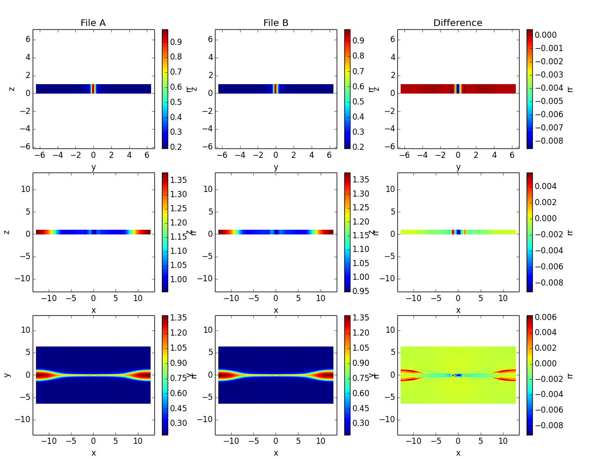

viscid_2d is a command line script for quickly generating 2D plots. In the following example, the -p options that have equations require that the evaluator is enabled in your viscidrc file (off by default for security reasons):
viscid_2d -o x_-15_10,y_-10_10,earth \
-p 'P=pp' -o log \
-p '^tmp=abs(psi)' -o log,style_contour,levels_30,linewidths=0.8,colors=grey,linestyles_solid \
-p 'B$^2$=bx**2+by**2+bz**2' -o log \
-p '$\rho v^2$=rr*(vx**2+vy**2+vz**2)' -o log \
--slice x=-20.0:15.0,y=0.0,z=-10.0:10.0 -t T1:00:00.0 -s 7,15 --tighten \
$DEV/src/Viscid/sample/*.py_0.xdmf
viscid_ts is a script for quickly generating time series plots:
viscid_ts -p 'P=pp' -o log -p 'B$_x$=bx' -p '|V|=sqrt(vx**2+vy**2+vz**2)' \
--slice x=9.5,y=0.0,z=0.0 --timeformat hms --rl -t T1:00:00.0:T1:20:00.0 \
--nofname $MNT/trillian/scratch/da*e3/target/*.py_0.xdmf
viscid_diff is a command line script for diffing two files. By default it’s very terse, but it can be made fairly verbose. The example below diffs two timestps from the same run. A more useful use case for this utility is diffing two different runs that you expect to be equal, but you get the idea.
viscid_diff --show *.3df.{000200,000201}.xdmf rr
Convert athena data files to xdmf files.
Give it a number and it tells you which bits were on. Useful for decoding topology bitmasks.:
$ bitmaskbits 552
The following bits were on (bit, 2**bit)...
3 (8)
5 (32)
9 (512)
{kind=link}